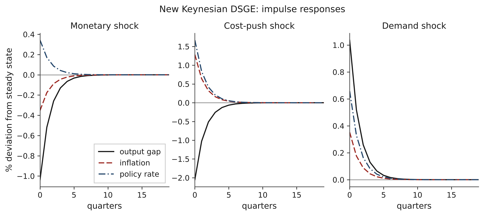
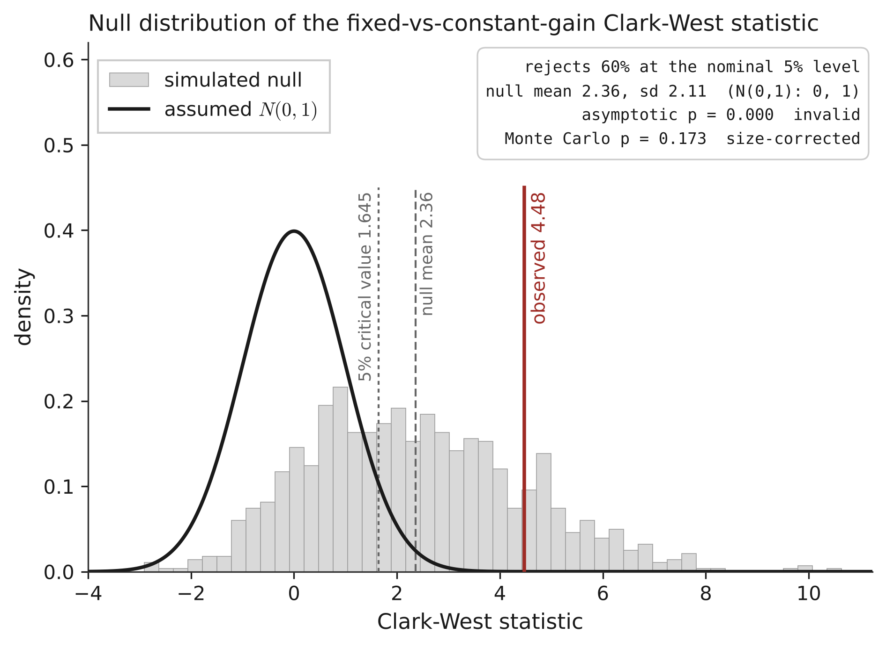

A formalised, reproducible library of macroeconomic models, a real business cycle model and a three-equation New Keynesian DSGE, with a swappable expectations operator and size-calibrated out-of-sample evaluation. It shows that a standard test used to compare adaptive-learning forecasts is badly oversized, corrects it, and finds no significant forecasting gain from adaptation on US inflation.
Motivation
Economic models are often distributed as code whose assumptions and derivations are hard to inspect, and whose forecast comparisons rely on asymptotic results that need not hold for the methods being compared. The aim is to make a small set of models explicit, reproducible and auditable, as a base for later work in which automated agents could audit and revise model assumptions.
Method
- Formalise. Equilibrium conditions are written symbolically in SymPy, which differentiates them to build the log-linear system.
- Solve. The system
A Et wt+1 = B wtis solved by the generalized Schur (QZ) method of Klein (2000). The steady state is derived analytically, and determinacy is verified with the Blanchard-Kahn condition. - Validate. The solution is checked against the exact closed form where one exists (the Brock-Mirman case with full depreciation), steady-state identities, impulse-response signs and business-cycle moments.
- Compare expectations. Rational expectations and Evans-Honkapohja constant-gain adaptive learning are interchangeable modules inside an otherwise identical model.
- Evaluate honestly. Clark-West and Giacomini-White statistics are calibrated by Monte Carlo against a fixed-coefficient null before any p-value is read.

Findings
A methodological result. Comparing a frozen forecast with a constant-gain learning forecast through the nested Clark-West test is invalid as usually applied. Constant gain carries estimation error that never vanishes, so the statistic is positive even when there is nothing to adapt to. Under a fixed-coefficient null calibrated to the data, the asymptotic one-sided 5% test rejects about 60% of the time. Monte Carlo calibration restores a correct size: about 4.7% rejection, with roughly uniform p-values.

A substantive null result. On a long split chosen to favour adaptation (train 1960Q1 to 1984Q4, evaluate 1985Q1 to 2019Q4, n = 140), constant-gain learning lowers one-quarter-ahead inflation RMSE by 6.2%. The size-correct test does not reject the no-adaptation null (Monte Carlo p between 0.15 and 0.17, stable across seeds, gains and alternative nulls). The small edge does not come from the regime change it was expected to help with, and it is driven by a few outliers. An earlier apparent advantage of learning over rational expectations was traced to relaxing the model's cross-equation restrictions, not to adaptation.
| Forecast | Inflation RMSE | Change |
|---|---|---|
| Fixed coefficients | 0.1742 | baseline |
| Constant-gain learning | 0.1635 | 6.2% lower, not significant |
These are failures to reject at the available sample size, not proof that adaptation cannot help.
Reproducibility
- 32 correctness and size-control tests.
- Fixed seeds, pinned dependencies and configuration-driven runs.
- Frozen vintages of the FRED series are committed, so the empirical numbers reproduce despite later data revisions.
- Released under the MIT licence with citation metadata and a Zenodo DOI.
Limitations and next steps
The scope is deliberately narrow: two models solved to first order, and one country. Next steps are a Solow and a Merton model built with the same recipe, and a larger multi-country panel where the output-gap result, large but borderline, can be tested with more power.
How to cite
@software{ospina_2026_eel,
author = {Ospina, Elizabeth},
title = {Economic Evolution Lab (EEL)},
version = {0.1.0},
year = {2026},
publisher = {Zenodo},
doi = {10.5281/zenodo.20836318}
}References and links
- Ospina, E. (2026). Economic Evolution Lab (EEL), version 0.1.0. doi.org/10.5281/zenodo.20836318
- Code: github.com/eliospina/economic-evolution-lab
- Klein, P. (2000). Using the generalized Schur form to solve a multivariate linear rational expectations model. Journal of Economic Dynamics and Control, 24(10).
- Clark, T. E. and West, K. D. (2007). Approximately normal tests for equal predictive accuracy in nested models. Journal of Econometrics, 138(1).
- Giacomini, R. and White, H. (2006). Tests of conditional predictive ability. Econometrica, 74(6).
- Evans, G. W. and Honkapohja, S. (2001). Learning and Expectations in Macroeconomics. Princeton University Press.
Every number in this note was checked against the project's source code in October 2026. Where the code and earlier public descriptions disagreed, this note follows the code.